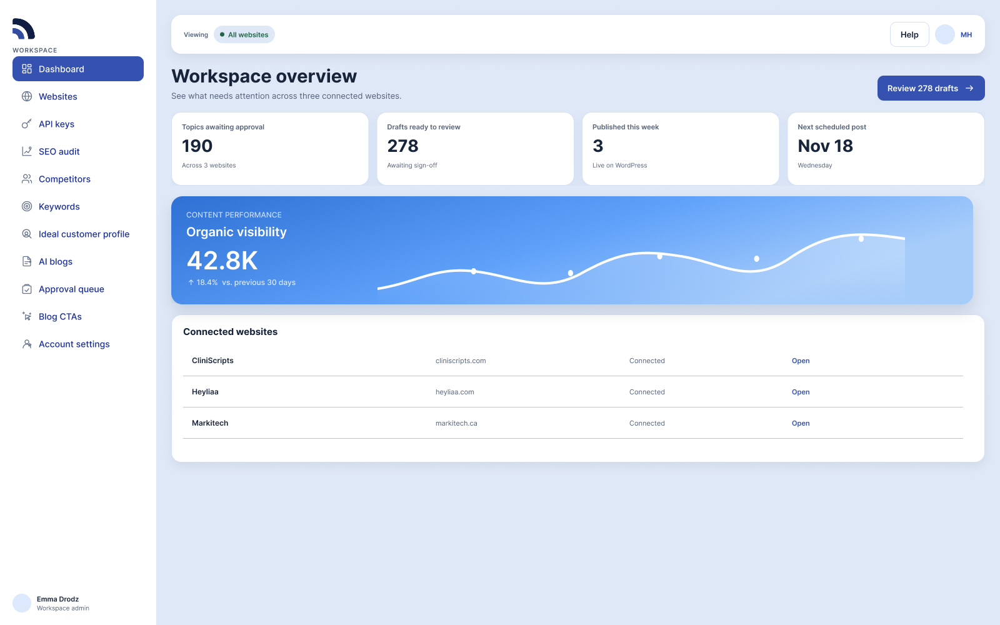
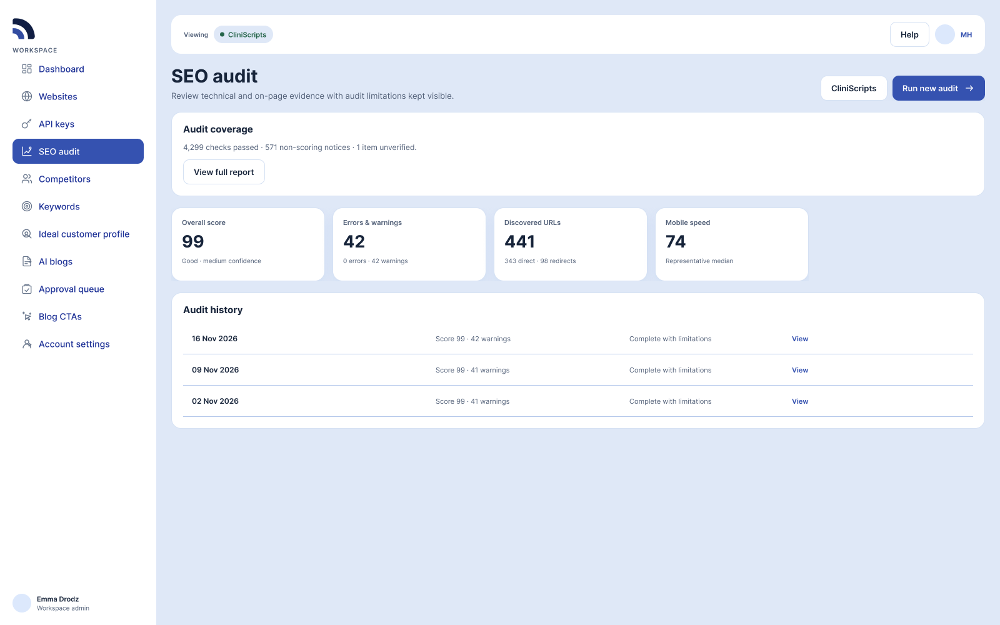
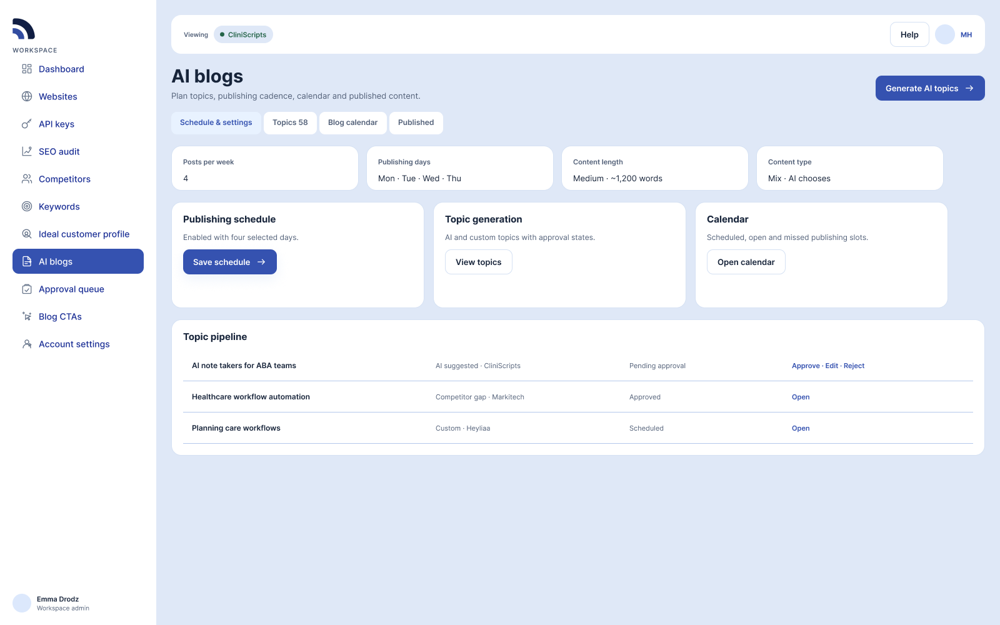
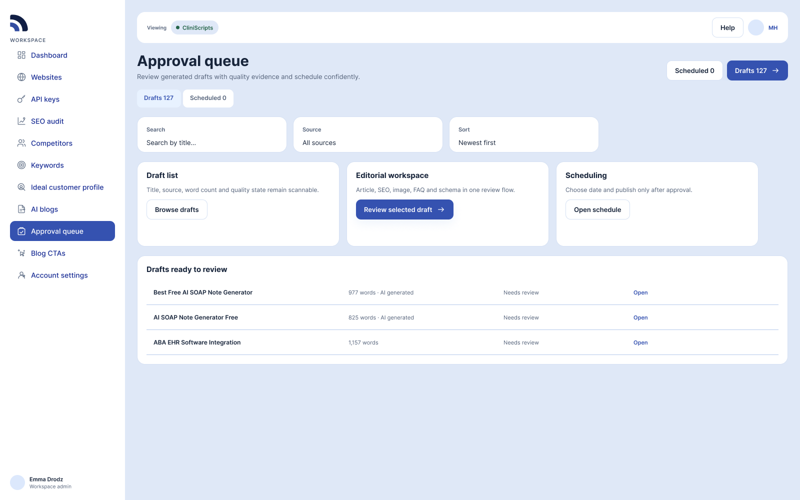

SEO issues and declining site health could be missed when nobody had time to run an audit every day.
MARKETING STUDIO · PRODUCT DESIGN
Multi-site content · Publishing · SEO
From daily SEO and content production to a focused 5 to 10 minute review.
I designed one workspace that monitors site health, targets useful keywords and prepares complete blog posts with internal links and original images, while keeping topic approval and publishing decisions with the team.




Selected product states from the Marketing Studio clickable prototype.
Role
Product Designer
Team
Small multi-site marketing team
Scope
UX/UI, design system and prototype
Core workflows
SEO, content, approval and publishing
01 · Situation
A small team had no time to audit every website and produce every blog by hand.
The team managed several websites with limited daily capacity. Checking SEO and site health, researching keywords, planning topics, writing articles, adding internal links, creating an image for each post and coordinating publication required attention across too many disconnected tasks.
Each blog required topic research, keyword targeting, writing, linking and a new image before it was ready.
The team needed to grow organic visibility without adding another full-time operational workload.
02 · Task
Reduce recurring marketing work while preserving human control over what gets published.
The product needed to turn SEO evidence into a usable content plan, automate the repetitive production steps and give the team a short, trustworthy checkpoint for approving topics, reviewing drafts and choosing when each post should go live.
03 · Action
I designed one workflow from site signal to scheduled article.
Monitor
Bring site health, SEO priorities and performance signals into a single overview across connected websites.
Target
Use keyword opportunities and audit evidence to propose topics with a clear reason for creating each article.
Produce
Generate the blog draft, relevant internal links and a supporting image as one connected content package.
Approve and schedule
Let the team approve topics, review completed drafts and place accepted posts on the publishing schedule.
Screen 01 · Workspace overview
Show the small team exactly where attention is needed.
The overview brings topic approvals, drafts, publishing activity, scheduled work and organic visibility into one calm hierarchy. Instead of checking separate tools, the team can begin with the few decisions that are blocking progress.
Screen 02 · SEO audit
Turn a daily audit into prioritized, actionable evidence.
The audit summarizes site health and elevates the issues with the greatest impact. This gives the system a reliable basis for keyword and content recommendations while letting the team inspect the evidence behind each suggested action.
Screen 03 · AI blogs
Create a complete article package, not an isolated block of copy.
The content workflow connects the target keyword, article draft, internal-link opportunities, supporting image and publication state. The team reviews one coherent package instead of manually assembling the same pieces across several tools.
Screen 04 · Approval queue
Keep the human checkpoint short, visible and consequential.
The approval queue concentrates the decisions that still require judgment. A reviewer can confirm a topic, inspect the prepared content and approve or return it before anything is scheduled for publication.
Implementation
A reusable UI system keeps a dense automation workflow calm and consistent.
- Product information architecture
- Multi-site navigation model
- Dashboard hierarchy and prioritization
- SEO audit and evidence patterns
- Keyword-led topic workflow
- Content and image generation states
- Review, approval and scheduling patterns
- Reusable components and high-fidelity prototype
04 · Result
The team’s active work becomes a focused 5 to 10 minute approval and scheduling pass.
Marketing Studio continuously organizes site-health evidence and prepares keyword-targeted content with internal links and supporting images. The team remains responsible for the important decisions: approving topics, reviewing the finished package and choosing the publishing schedule.
Back to selected work
View all projects ↗